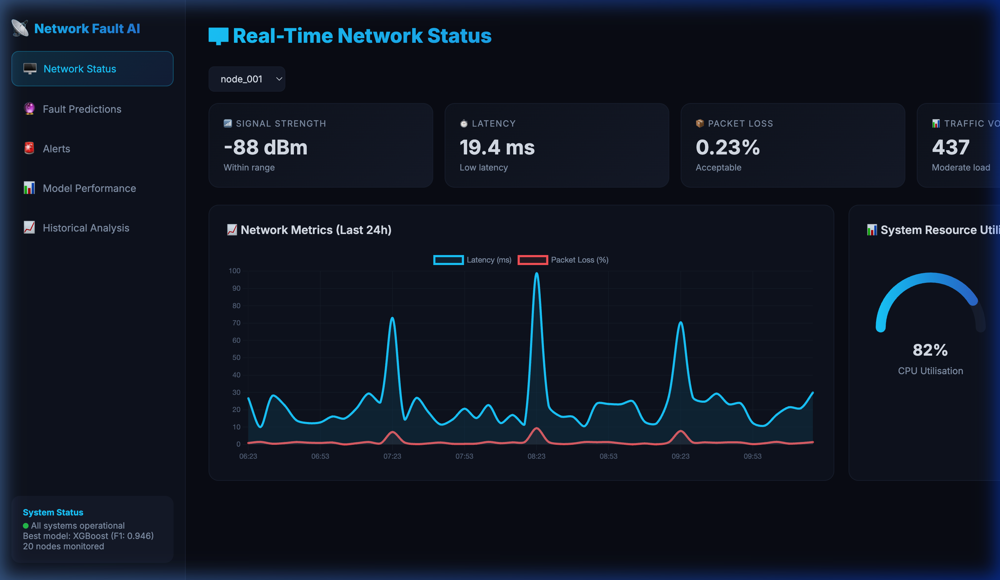
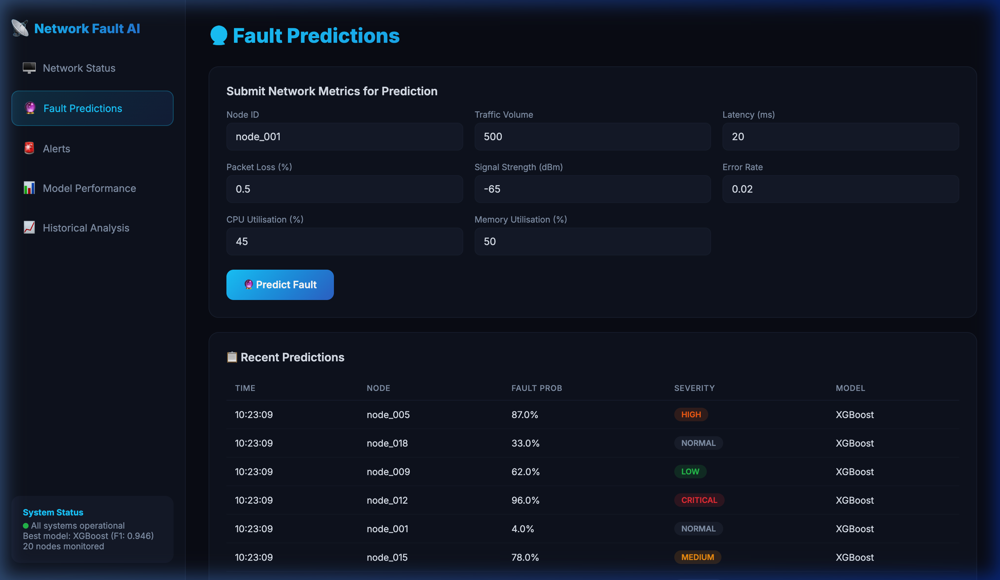
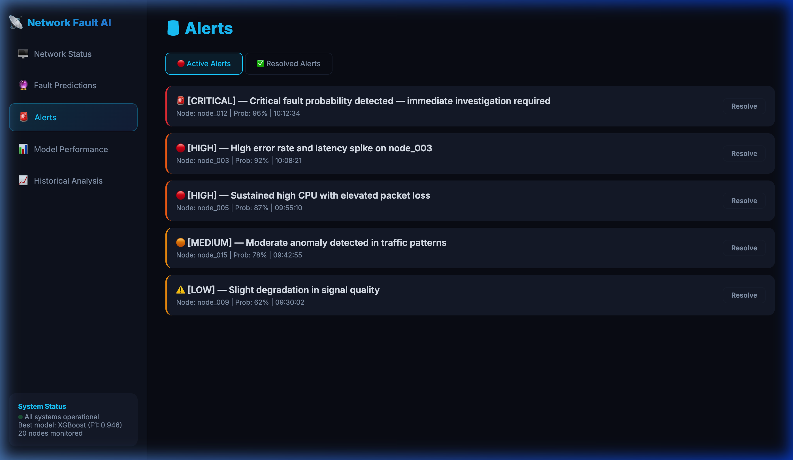
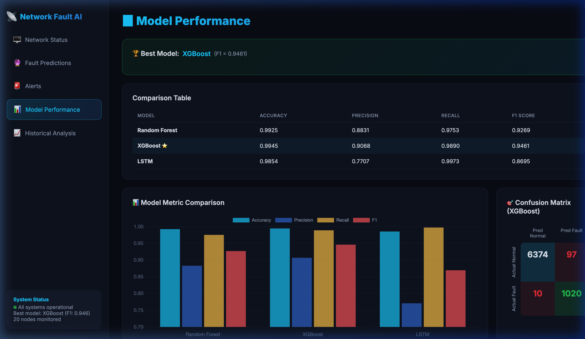

Intelligent Telecom Network Monitoring &
Predictive Fault Detection
using Machine Learning
Prepared by: Sai • March 2026
Build an AI-powered system that predicts network faults BEFORE they occur, enabling proactive maintenance, reducing downtime, and improving service quality.
Technology Stack
| Model | Accuracy | Precision | Recall | F1 Score |
|---|---|---|---|---|
| Random Forest | 0.9925 | 0.8831 | 0.9753 | 0.9269 |
| XGBoost ⭐ | 0.9945 | 0.9068 | 0.9890 | 0.9461 |
| LSTM | 0.9854 | 0.7707 | 0.9973 | 0.8695 |
Live KPI cards, time-series charts with fault spike detection, and system resource gauges

Submit network metrics for instant fault prediction with severity classification and model output

Active & resolved alert tracking with severity levels and one-click resolution

Comprehensive model comparison, confusion matrix, fault timelines, and correlation heatmaps

AI Network Fault Prediction System
Questions & Discussion
Prepared by Sai • March 2026